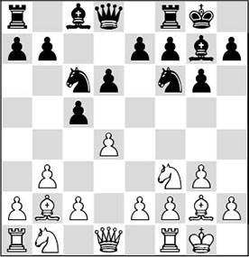
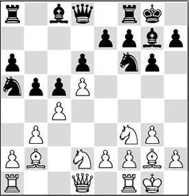
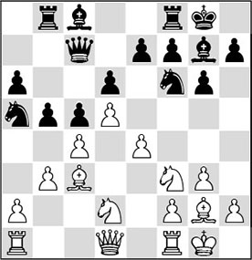
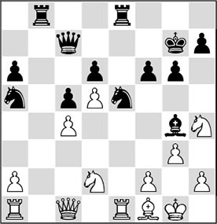
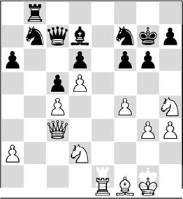
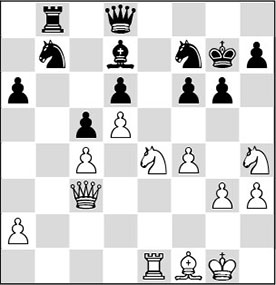
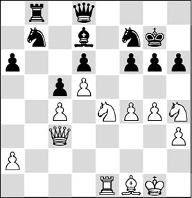
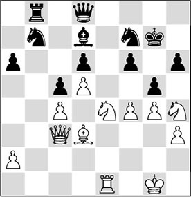
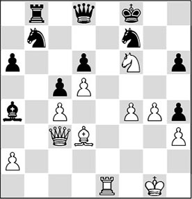

Chapter 23
Quiz: space advantage
23.1 Introduction
Once more we will dabble with one of Steinitz’s Elements. In this chapter we concentrate on the ‘space advantage’ theme. Think carefully about which factors you must pay attention to as soon as you have obtained this advantage.
23.2 Quiz
For an exercise with the theme ‘creating and exploiting a space advantage’, we again dissect a game by making use of the ‘question and answer’ method, which we also used in Chapters 13 and 18.
QP 6.9 (A49)
1.d4 ♘f6 2.♘f3 g6 3.b3 ♗g7 4.♗b2 0-0 5.g3 d6 6.♗g2 c5 7.0-0 ♘c6

8.d5!
Answer to Question 1:
Answer A) is correct. White obtains a significant space advantage and chases the knight to less green pastures.
With 8.dxc5 White would release the tension in the centre, after which Black has no problems at all.
With 8.e3 White would choose a somewhat modest set-up.
8…♘a5 9.c4 a6 10.♘bd2 b5

11.e4
Answer to Question 2:
Option B) was correct. Of course, White strengthens his central position further. With this move he also increases his space advantage.
11.cxb5 is not the right way. Black will now have a majority on the queenside which is quite mobile.
11.♗c3 is not immediately necessary, but it’s not a bad move.
11…♖b8 12.♗c3 ♕c7

Black’s last move was a little dubious, and White can exploit this.
13.e5
Answer to Question 3:
The right continuation was C). Since Black cannot take on e5 as this would lose the exchange, White does not lose time with this thematic push.
13.♖c1 – here the rook seems to stand nicely, but in fact it does very little. If White gets his way, the c-file will never be opened, as then he would abandon his beautiful central position.
13.♕c2 is a useful developing move, but 13.e5 is a more powerful possibility.
13…♘g4 14.exd6 exd6 15.♗xg7 ♔xg7 16.♖e1 f6

The black king position suffers from a certain ‘decay’, and the question is how White can put the focus on this in a clever way.
17.♕c1!
Answer to Question 4:
If you have chosen A), you have hit the bull’s eye. The queen is heading for the beautiful square c3, which will yield him three advantages:
1) The a1-h8 diagonal is taken into possession;
2) The knight on a5 comes under fire;
3) The pawn on c4 gets extra protection.
17.♕e2 – the e-file is an important file, but it’s better for White to go about this in another way.
17.♗h3 is positionally sound (White would like to exchange the light-squared bishops, in order to weaken the square e6), but it fails tactically to 17…♘xf2.
17…♘e5 18.♗f1 ♗g4 19.♘h4 bxc4 20.bxc4 ♖fe8

Black has been fighting back for the last few moves, but now White can take over the initiative again.
21.f4!
Answer to Question 5:
21.f4! is obvious, but strong. The black knight was a nuisance on e5, and now it is kicked back.
21…♘f7 22.♕c3 ♖xe1?!
Abandoning this file does not exactly help Black’s cause.
23.♖xe1 ♘b7 24.h3 ♗d7

25.♘e4!
Answer to Question 6:
This was bound to be the right approach. The weak point f6 is attacked, and now the problems are mounting for the black player.
25…♕d8

26.g4!
Answer to Question 7:
Excellent. Now 27.g5 is a strong threat, after which White breaks through.
26…h6

27.♗d3!
Answer to Question 8:
If you have marked C), your positional feeling is excellent. With this good move White takes aim at a new weakness: the pawn on g6, which can hardly be protected.
There might have been an even better move. The possibility of 27.g5!! wasn’t mentioned as one of the alternatives, but this is probably the most direct way to unhorse Black. After 27…hxg5 28.fxg5 ♘e5 29.♘xf6, Black will not hold for much longer.
27.f5?! is not the right way. Black will now obtain control of the e5-square, and then the worst will be behind him. A good idea is 27.♘g3!?, but this idea can be refined. After 27.♘g3!?, Black can struggle on with 27…♕a5 28.♕a1 (to maintain the queen on the long diagonal. Inconsistent, but probably stronger nonetheless, is 28.♕c1!, when the threats on the kingside will become too much for Black) 28…♕d2, and the invasion of the black queen somewhat disturbs White’s attacking plans.
27…g5

The game is slowly heading for a climax. The black king position is shaking to its foundations.
28.♘g3!
Answer to Question 9:
The piece sacrifice under B) is wonderful! White gives a piece in order to gain control of the weak point f6. After that, the remaining white pieces will intervene decisively.
28.fxg5 is not the most adequate attacking continuation as, with it, White abandons the square e5.
28.♘xf6? is a mistake. The sacrifice can be accepted by Black with impunity.
28…gxh4 29.♘h5+ ♔f8 30.♘xf6 ♗a4

The protective pawn layer around the black king has been blown away.
31.♘h5!
Answer to Question 10:
Of course. Mate is threatened, and it cannot be averted in a satisfactory way.
31…♘e5 32.fxe5
1-0